Trajectory inference, aka pseudotime
Trajectory inference assumes that cells are sampled during various stages of a transition from a cell type or state to another type or state. By identifying trajectories that connect cells based on similarilty in gene expression, one can gain insights into lineage relationships and developmental trajectories. To quantitate the measure of biological progress outside of defined time-points we use a metric called ‘pseudotime’, which is defined as a distance metric between the ‘starting’ cell and ‘ending’ cell along the trajectory.
Analysis of discrete clusters can hide interesting continous behaviors in cell populations. By ordering cells based on an expression trajectory one can uncover novel patterns of gene expression.
There are many methods
knitr::include_graphics("img/dynverse.webp")

Check out the dynverse for help with algorithm selection. They benchmarked > 60 methods, and offer some tools to run multiple algorithms on the same data.
Simplest method (PCA)
In some datasets, particularly developmental datasets it is often the case that a principal component may separate out cells based on known developmental time. This can be used a ‘pseudotime’ metric, which is simply the PC1 scores for each cell. As an example, scRNA-seq analyses of liver development and Beta-cell maturation used PC1 to examine pseudotime.
For this first analysis we will use a dataset of mouse early embryogenesis that was curated into a SingleCellExperiment object from here https://hemberg-lab.github.io/scRNA.seq.datasets/.
# read in data
sce <- readRDS(url("https://scrnaseq-public-datasets.s3.amazonaws.com/scater-objects/deng-reads.rds"))
# convert SingleCellExperiment to Seurat
sobj <- CreateSeuratObject(counts(sce), meta.data = as.data.frame(colData(sce)))
sobj <- NormalizeData(sobj)
sobj <- FindVariableFeatures(sobj)
sobj <- ScaleData(sobj)
sobj <- RunPCA(sobj, verbose = FALSE)
Idents(sobj) <- "cell_type1"
# plot the PCA reduction
DimPlot(sobj, reduction = "pca")
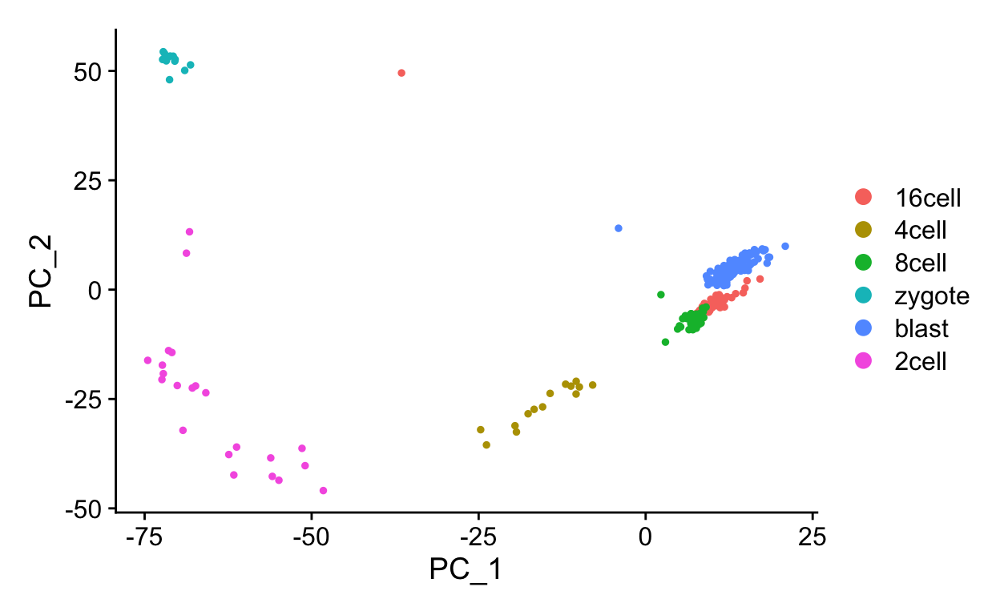
Next we will plot out the PC1 scores for each cell type (developmental stage), using the meta data stored in the cell_type column of meta.data.
# get the PC1 values for each cell, and store in a data frame
plt_dat <- FetchData(sobj, c("PC_1", "cell_type1"))
# reorder cell_type based on known developmental time
cell_type <- factor(plt_dat$cell_type1,
levels = c("zygote",
"2cell",
"4cell",
"8cell",
"16cell",
"blast"))
# add the reordered cell_type info as a new column to plt_data
plt_dat$cell_type <- cell_type
# plot the cells ordered by pseudotime (PC1)
ggplot(plt_dat, aes(cell_type, PC_1)) +
geom_jitter(aes(color = cell_type)) +
labs(y = "PC1 (aka pseudotime)") +
ggtitle("Cells ordered by PC1")
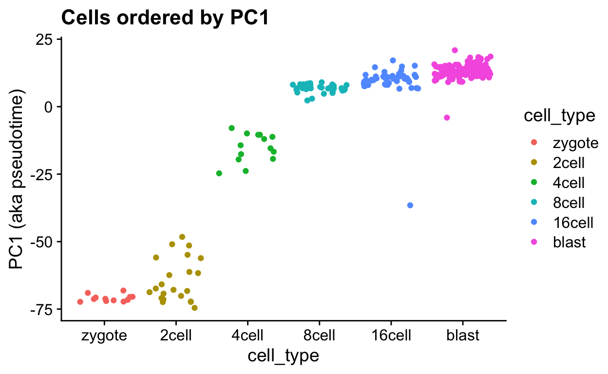
# Visualize the top genes associated with PC1 (pseudotime)
VizDimLoadings(sobj, dims = 1, balanced = T)
# Plot example genes
FeatureScatter(sobj, "PC_1", "Actb")
FeatureScatter(sobj, "PC_1", "Parp12")
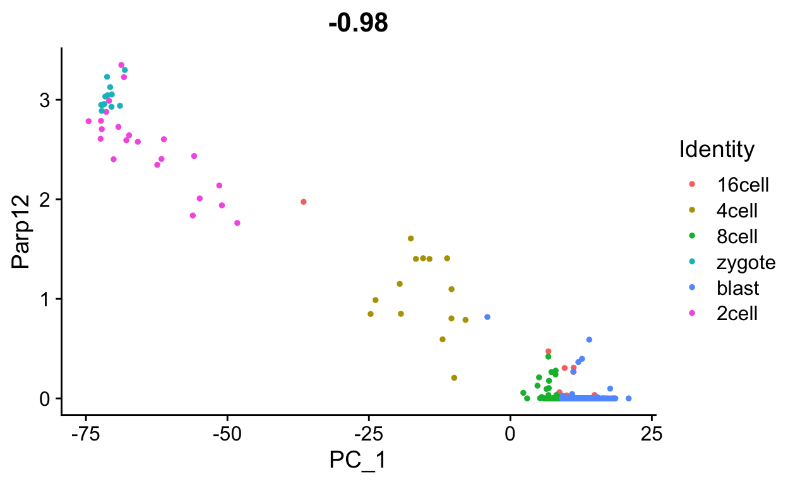
We can overlay the pseudotime scores onto a projection by storing them as a meta.data column.
# Add UMAP dimensional reduction
sobj <- RunUMAP(sobj, dims = 1:15)
# get PC1 values and rank to generate a 'pseudotime'
ptime <- FetchData(sobj, "PC_1")
ptime$ptime <- rank(ptime$PC_1)
# add pseudotime to the metadata
sobj <- AddMetaData(sobj,
ptime$ptime,
col.name = "Pseudotime")
# color single cells on a UMAP plot according to pseudotime
p1 <- FeaturePlot(sobj, "Pseudotime")
# color single cells on a UMAP plot according to cell_type (i.e., timepoint)
p2 <- DimPlot(sobj,
group.by = "cell_type1",
reduction = "umap") +
ggtitle("Cell type")
plot_grid(p1, p2, align = "hv", ncol = 2, rel_widths = c(1, 1))
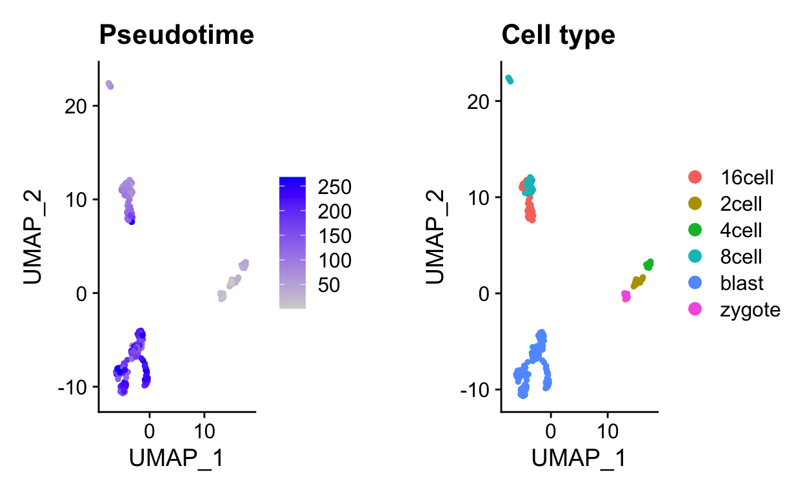
sobj <- RunTSNE(sobj, dims = 1:15)
p1 <- DimPlot(sobj,
group.by = "cell_type1",
reduction = "tsne") +
ggtitle("tSNE")
p2 <- DimPlot(sobj,
group.by = "cell_type1",
reduction = "umap") +
ggtitle("UMAP")
plot_grid(p1, p2, align = "hv", ncol = 2, rel_widths = c(1, 1))
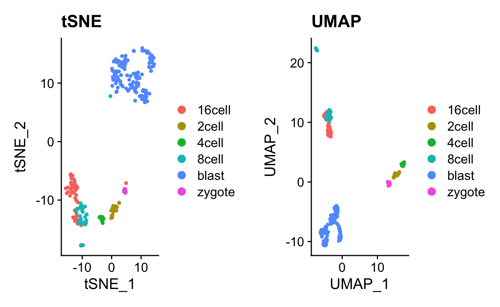
Destiny
Non-linear dynamics are not always captured by PCA. ‘Diffusion maps’ offer an alternative, non-linear transformation approach that infers the temporal order of differentiating cells by modeling it as a diffusion process. This can better resolve complex trajectories and branching than linear methods like PCA. We’ll use the R package destiny to look at diffusion maps and diffusion pseudotime.
# Generating a diffusion map requires a matrix of expression data:
# prepare a counts matrix
logcounts <- GetAssayData(sobj, "data")
# transpose matrix (genes as columns, cells as rows)
input_matrix <- t(logcounts[VariableFeatures(sobj), ])
# generate a diffusion map
set.seed(42)
dm <- DiffusionMap(as.matrix(input_matrix))
# store the diffusion map as a custom dimensional reduction in the Seurat object
sobj[["DM"]] <- CreateDimReducObject(embeddings = dm@eigenvectors, key = "DM_", assay = DefaultAssay(sobj))
# plot the diffusion map
DimPlot(sobj, reduction = "DM", group.by = "cell_type1") + ggtitle("Diffusion Map")
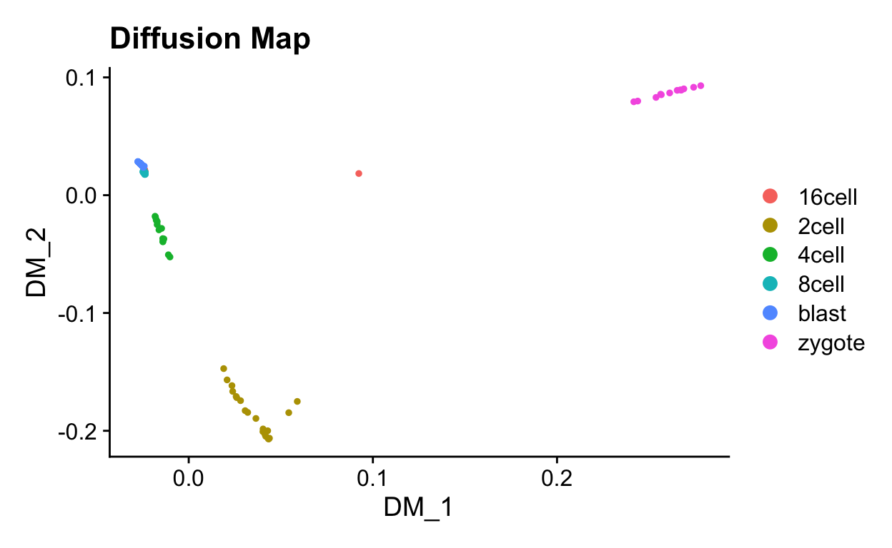
Next we calculate diffusion pseudotime using DPT.
# calculate the diffusion pseudotime (DPT)
dpt <- DPT(dm)
# color single cells on diffusion map plot according to DPT
p1 <- plot(dpt, 1:2) + ggtitle("Diffusion Pseudotime (DPT)")
# create data.frame for easy plotting of DPT
tmp <- data.frame(DC1 = dm$DC1,
DC2 = dm$DC2,
timepoint = cell_type,
dpt = dpt$DPT1)
# color single cells on diffusion map plot according to timepoint
p2 <- ggplot(tmp, aes(x = DC1, y = DC2, colour = timepoint)) +
geom_point() +
theme_classic() +
ggtitle("Timepoint")
plot_grid(p1, p2, align = "hv", ncol = 2, rel_widths = c(1, 1))
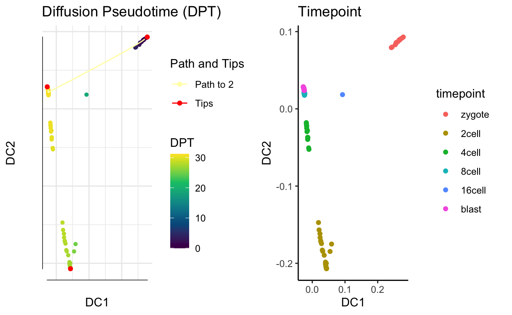
# plot timepoint vs. DPT
ggplot(tmp, aes(timepoint, dpt, colour = timepoint)) +
geom_point() +
geom_jitter() +
ggtitle ("Timepoint vs. DPT")
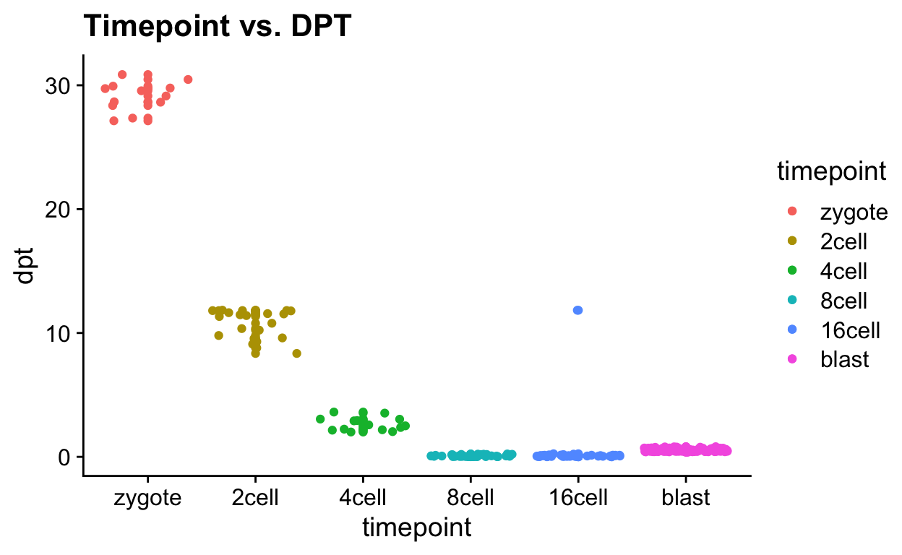
PCA and diffusion maps can be good for simple trajectories or pathway activation systems e.g. T-cell activation, drug pertubation, single cell type responses.
Slingshot
For more complex trajectories, simply using a single PC or a diffusion componenet may not be sufficient. Systems with bi or tri-furcating trajectories won’t be well fit within a single dimension.
For this next analysis we will use a dataset taken from a single cell RNA-seq study of hepatocyte development.
sobj <- readRDS("obj/slingshot.rds")
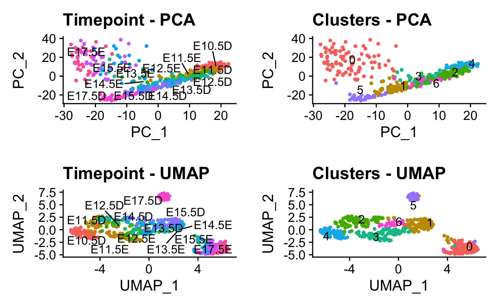
Slingshot is a Bioconductor package that draws curved trajectories through a low dimensional embedding to infer developmental dynamics. It provides functionality for computing pseudotimes through multiple trajectories.
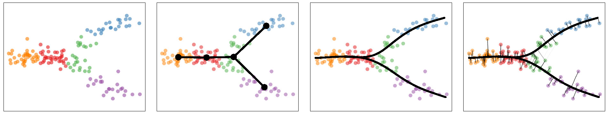
#convert to SingleCellExperiment
sce <- as.SingleCellExperiment(sobj)
#subset to only a few PCA dimensions
reducedDim(sce) <- reducedDim(sce)[, 1:10]
sce <- suppressWarnings(slingshot(
sce,
reducedDim = 'PCA',
clusterLabels = 'seurat_clusters',
start.clus = "4"
))
# extract info about pseudotimes from sce
sds <- SlingshotDataSet(sce)
sds
#> class: SlingshotDataSet
#>
#> Samples Dimensions
#> 447 10
#>
#> lineages: 3
#> Lineage1: 4 2 6 1 3
#> Lineage2: 4 2 6 1 0
#> Lineage3: 4 2 6 1 5
#>
#> curves: 3
#> Curve1: Length: 82.362 Samples: 305.31
#> Curve2: Length: 122.06 Samples: 310.18
#> Curve3: Length: 84.424 Samples: 267.11slingshot provides some minimal plotting utilities in base R plotting:
# Plot clusters with identified lineages overlayed
par(xpd=TRUE)
par(mar=c(4.5,5.5,2,7))
plot(reducedDims(sce)$PCA, col = brewer.pal(9,'Set1')[sce$seurat_clusters], pch=16)
lines(SlingshotDataSet(sce), lwd=2, col='black')
legend(x=25, y=20, legend=unique(colData(sce)$seurat_clusters), fill=brewer.pal(11,'Set1')[as.integer(unique(colData(sce)$seurat_clusters))])
# Plot pseudotime for a lineage (we'll plot lineage #3 in this example)
colors <- colorRampPalette(brewer.pal(11,'Spectral')[-6])(100)
plotcol <- colors[cut(sce$slingPseudotime_3, breaks=100)]
plot(reducedDims(sce)$PCA, col = plotcol, pch=16)
lines(SlingshotDataSet(sce), lwd=2, col='black')
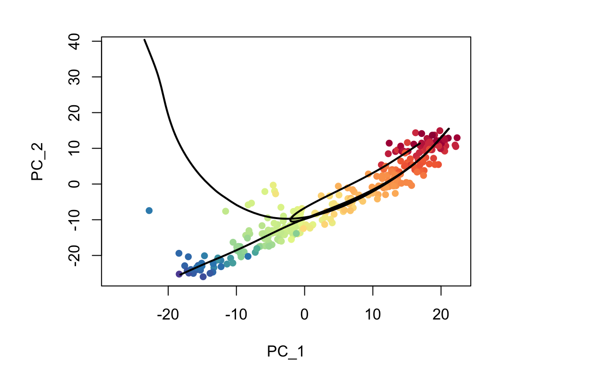
Plotting slingshot pseudotime onto UMAP
The lineage trees are generated in the same dimensionality as the input data. To visualize the pseudotime estimates in UMAP space we can add these to the meta.data slot of the seurat object.
# add slingshot pseudotimes to seurat object `meta.data`
sobj$pseudotime1 <- sce$slingPseudotime_1
sobj$pseudotime2 <- sce$slingPseudotime_2
sobj$pseudotime3 <- sce$slingPseudotime_3
FeaturePlot(sobj, c("pseudotime1", "pseudotime2", "pseudotime3"))
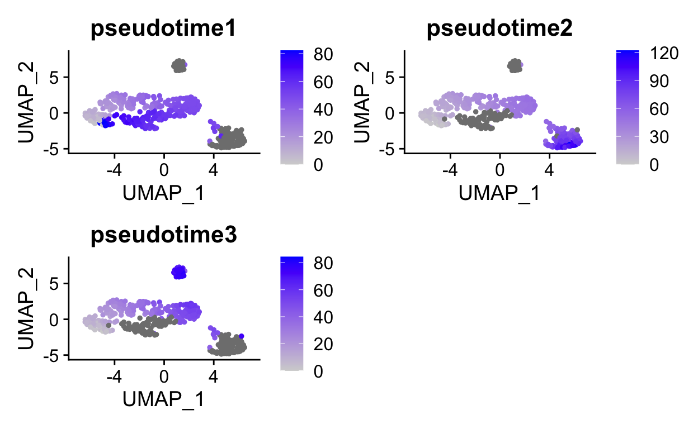
Identifying differentially expressed genes along a trajectory
We can use a GAM (or other models) to compare pseudotimes to gene expression values to identify genes that vary significantly with pseudotime. Using a GAM can uncover non-linear expression patterns (i.e. not just up or down). See this blog for a nice description.
# select the ptime values
ptime <- sce$slingPseudotime_2
# get cells in that lineage
lineage_cells <- colnames(sce)[!is.na(ptime)]
# remove values for cells not in the lineage
ptime <- ptime[!is.na(ptime)]
# just test variable genes to save some time
genes_to_test <- VariableFeatures(sobj)[1:1000]
# get log normalized data to test
cnts <- logcounts(sce)[genes_to_test, lineage_cells]
# fit a GAM with a loess term for pseudotime
gam.pval <- apply(cnts, 1, function(z){
d <- data.frame(z = z, ptime = ptime)
tmp <- suppressWarnings(gam(z ~ lo(ptime), data=d))
p <- summary(tmp)[4][[1]][1, 5]
p
})
# adjust pvalues
res <- tibble(
id = names(gam.pval),
pvals = gam.pval,
qval = p.adjust(gam.pval, method = "fdr")) %>%
arrange(qval)
head(res)
#> # A tibble: 6 x 3
#> id pvals qval
#> <chr> <dbl> <dbl>
#> 1 Tinagl1 8.73e-151 8.72e-148
#> 2 Spon1 2.61e-150 1.30e-147
#> 3 Pdzk1ip1 8.85e-145 2.95e-142
#> 4 Gc 2.58e-139 6.44e-137
#> 5 1700011H14Rik 1.67e-127 3.35e-125
#> 6 Adamts1 6.47e-127 1.08e-124Finally make a heatmap to plot out these genes that vary over pseudotime.
# get log normalized counts
to_plot <- as.matrix(logcounts(sce)[res$id[1:100], lineage_cells])
# arrange cells by pseudotime
ptime_order <- colnames(to_plot)[order(ptime)]
# add useful annotations
annotations <- colData(sce)[lineage_cells,
c("slingPseudotime_2",
"seurat_clusters",
"timepoint")] %>%
as.data.frame()
ha <- HeatmapAnnotation(df = annotations)
Heatmap(to_plot,
column_order = ptime_order,
show_column_names = FALSE,
show_row_names = FALSE,
top_annotation = ha)
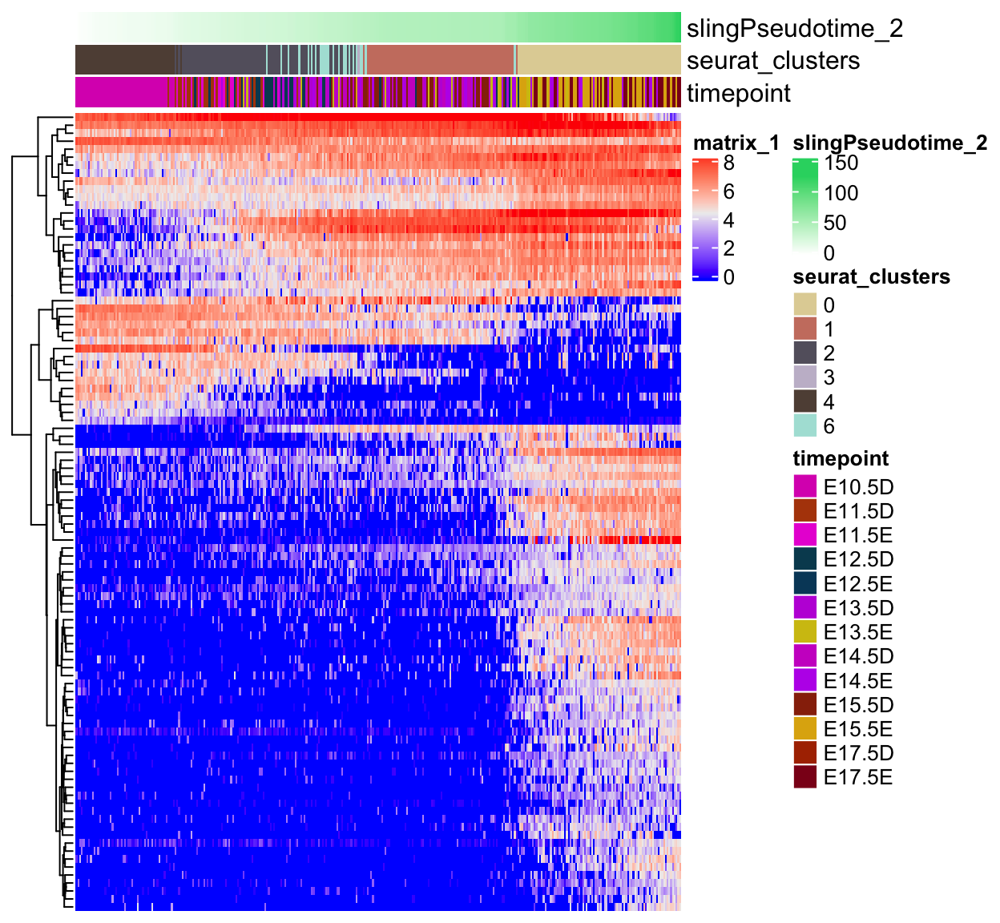
tradeSeq
tradeSeq is a package that allows analysis of gene expression along trajectories (such as those found with Slingshot). For every gene in the dataset, tradeSeq fits a GAM (as explained in the previous section). It then allows statistical inference on the GAM by assessing contrasts of the parameters of the fitted GAM, aiding in interpreting complex datasets. For more details, see the tradeSeq paper. The following is from the tradeSeq tutorial.
Let’s use tradeSeq to look at our Slingshot data set from the previous section:
# tradeSeq needs a counts matrix and lineage curves as minimal input
crv <- sds
counts <- as.matrix(assays(sce)$counts)
clusters <- sce$seurat_clusters
The following two code blocks we will NOT run, as they both take several minutes. These two code blocks are fitting the tradeSeq negative binomial generalized additive model (NB-GAM). For an in-depth description of what’s going on, see this vignette. Basically, we are using the NB-GAM framework in tradeSeq to smooth each gene’s expression in each lineage. Smoothers can be decomposed into a set of basis functions, which are joined together at knot points (simply called knots).
We run the evaluateK function in order to determine the correct number of knots. This returns the AIC (Akaike Informaction Criterion) for each gene fitted with each number of knots defined in the function (typically the interesting range is 3 to 10 knots) in a series of diagnostic plots.
set.seed(5)
icMat <- evaluateK(counts = counts, sds = crv, k = 3:10, nGenes = 200, verbose = T)
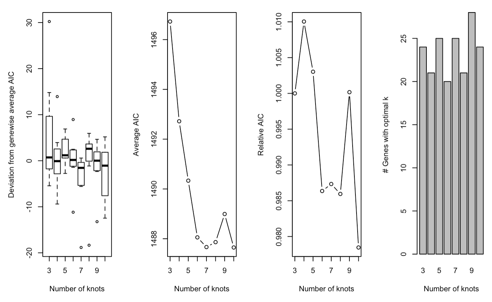
The middles panels show that the drop in AIC levels off if the number of knots is increased beyond 6, so we’ll choose that number of knots to fit the tradeSeq models using the fitGAM function. nknots = 6 is also the default for the fitGAM function:
set.seed(7)
sce <- fitGAM(counts = counts, sds = sds, nknots = 6, genes = 1:1000, verbose = TRUE, sce=TRUE)
# Load in the SingleCellExperiment created by running `fitGAM` above
sce <- readRDS("obj/tradeSeq.rds")
# plot our Slingshot lineage trajectories, this time illustrating the new tradeSeq knots
plotGeneCount(curve = sds, counts = counts,
clusters = clusters,
models = sce)
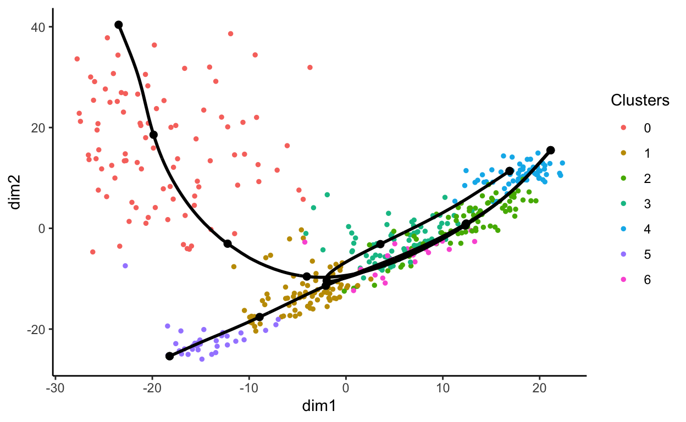
With tradeSeq, we can examine differential gene expression in a variety of ways. We can check if a gene is associated with a particular lineage using associationTest, discover progenitor marker genes using startVsEndTest, compare specific pseudotime values with a lineage, discover differentiated cell type markers using diffEndTest, discover genes with different expression patterns using patternTest, and identify early drivers of differentiation using earlyDETest.
Discovering differentiated cell type markers
# discover marker genes for the differentiated cell types
endRes <- diffEndTest(sce, pairwise = TRUE)
head(endRes)
#> waldStat df pvalue waldStat_1vs2 df_1vs2 pvalue_1vs2
#> Gnai3 1.262924 2 0.5318136472 0.3567923 1 5.502931e-01
#> Cdc45 16.362748 2 0.0002798172 2.0114514 1 1.561159e-01
#> H19 120.357216 2 0.0000000000 0.1184053 1 7.307705e-01
#> Scml2 7.014859 2 0.0299738613 1.1724870 1 2.788908e-01
#> Apoh 347.651164 2 0.0000000000 39.2279070 1 3.771115e-10
#> Narf 6.657228 2 0.0358427555 6.6347775 1 1.000067e-02
#> waldStat_1vs3 df_1vs3 pvalue_1vs3 waldStat_2vs3 df_2vs3
#> Gnai3 1.252185 1 2.631355e-01 0.249168 1
#> Cdc45 16.165901 1 5.802937e-05 4.148820 1
#> H19 98.180587 1 0.000000e+00 88.028317 1
#> Scml2 6.891550 1 8.660416e-03 3.467197 1
#> Apoh 331.912714 1 0.000000e+00 162.163896 1
#> Narf 1.486989 1 2.226842e-01 2.483978 1
#> pvalue_2vs3 logFC1_2 logFC1_3 logFC2_3
#> Gnai3 0.61766151 0.05497623 0.1031472 0.04817095
#> Cdc45 0.04166355 1.71145519 4.1113875 2.39993230
#> H19 0.00000000 0.06696979 -1.7552750 -1.82224479
#> Scml2 0.06259731 1.09854160 4.0596169 2.96107529
#> Apoh 0.00000000 -3.24297255 -9.7584555 -6.51548295
#> Narf 0.11501103 -0.91400830 -0.3579889 0.55601937We can plot the most significant gene using the plotSmoothers function.
o <- order(endRes$waldStat, decreasing = TRUE)
sigGene <- names(sce)[o[1]]
plotSmoothers(sce, counts, sigGene)
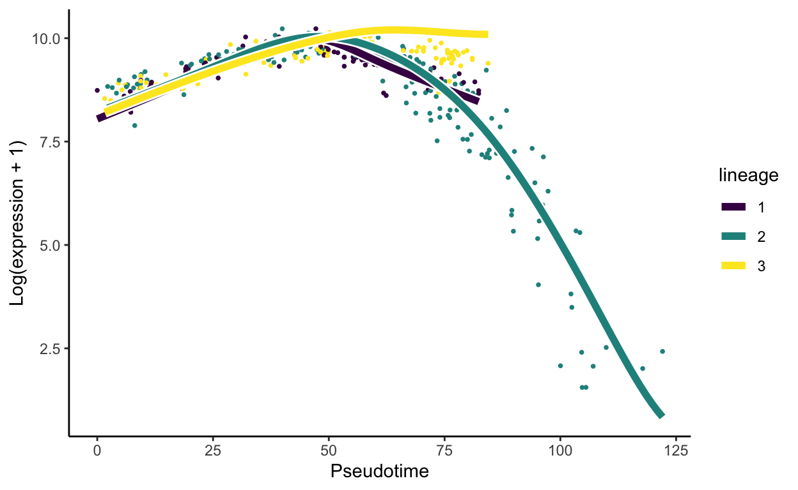
Alternatively, we can color the cells in PC space with that gene’s expression.
plotGeneCount(crv, counts, gene = sigGene)
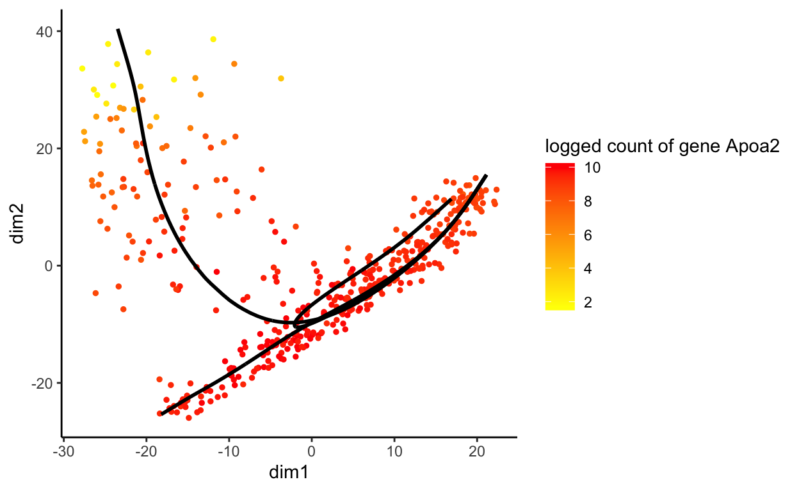
Discovering early drivers of differentiation
We might want to find a list of genes that are differentially expressed between lineages at a particular region, e.g. around the separation of two or multiple lineages.
earlyDERes <- earlyDETest(sce, pairwise = TRUE, knots = c(2, 4))
oEarly <- order(earlyDERes$waldStat, decreasing = TRUE)
head(rownames(earlyDERes)[oEarly])
#> [1] "Rps11" "Cp" "Apoe" "Apoh" "Rpl13" "Rpl8"plotSmoothers(sce, counts, gene = rownames(earlyDERes)[oEarly][2])
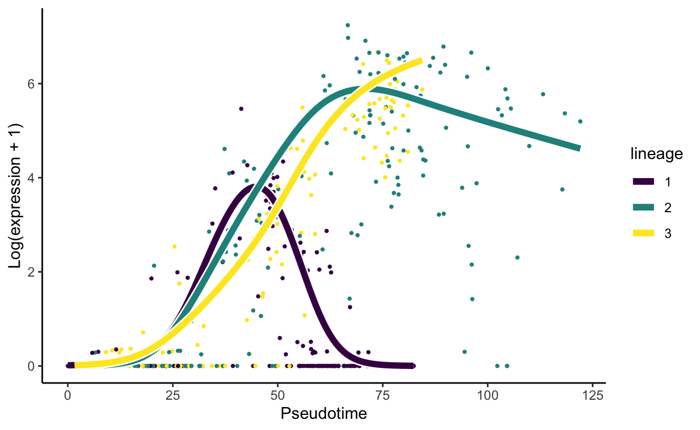
plotGeneCount(crv, counts, gene = rownames(earlyDERes)[oEarly][2])
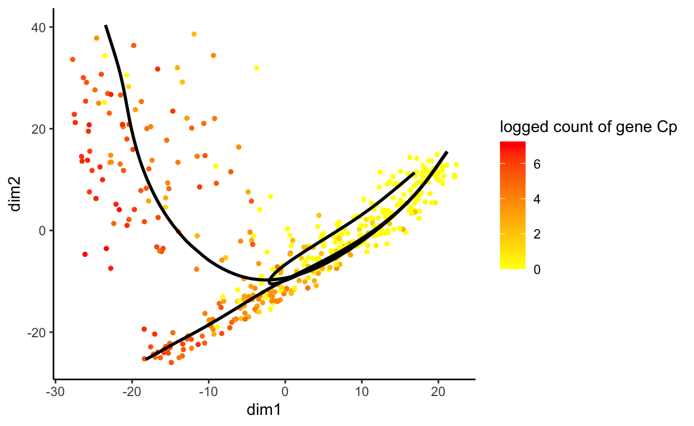
PAGA
PAGA (partition-based graph abstraction) is a python module available in the python counterpart to seurat known as scanpy. PAGA provides both a very nice visualization technique, and a method for trajectory analysis. Whereas PC and DPT analyses are good for simple trajectories, and Slingshot is good for bi- and multifuracting trajectories, PAGA is good for more complex trajectories.
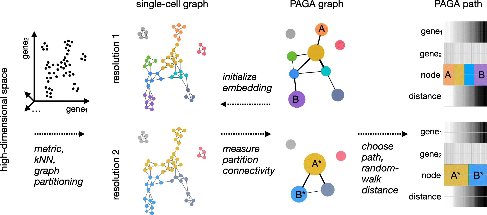
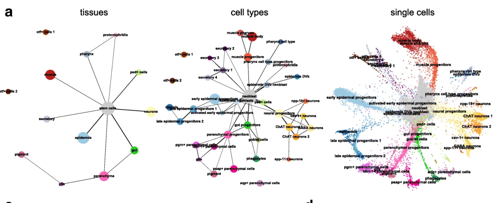
How to deal with multiple timepoints

RNA velocity
Based on a cool concept that while the exonic transcriptome represents the current state of a cell, the intronic transcriptome represents what the cell is going to be in the near future. By introducing a transcriptional dynamic model, RNA velocity analysis predicts the directional ‘flow’ of cell state transition, which greatly expands the application of scRNA-seq to capture dynamics of molecular changes. There is a python and R package implementation for performing analysis, both of which requires processing a bam file to quantitate unspliced and spliced mRNAs per cell (which we can’t do within the constraints of the workshop). Recently a scalable (python) toolkit for RNA velocity analysis in single cells called scVelo was published, which can do additional analysis such as estimating the directional velocity pseudotime.
http://velocyto.org/ https://github.com/velocyto-team/velocyto.R https://scvelo.readthedocs.io/


Recommendations:
Limit analysis to relevant cell populations (i.e. don’t try to infer trajectories where you know they don’t exist)
Start with simple methods and trajectories.
Complement pseudotime trajectories with RNA velocity analyses to provide directionality and orthogonal validation.
Credits:
Much of this material was either copied or motivated by the slingshot, destiny, and tradeSeq vignettes. Some wording was also borrowed/copied from this scRNA-seq analyis vignette (which I recommend).